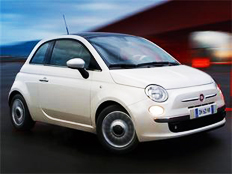

Il Made in Italy al volante
www.daniele_blog.it/Il Made in Italy al volante
La FIAT 500

Reproduced with the permission of Newstreet.it
La prima FIAT 500 nasce verso la fine degli anni '50. In Italia è molto famosa e gode di un successo clamoroso. Con il trascorrere del tempo diventa un simbolo del Made in Italy in tutto il mondo. La sua produzione termina nel 1975.
Nel settembre del 2007 viene lanciata la nuova FIAT 500 e si apre una nuova fase nella storia della mitica macchina italiana.
Nella creazione della macchina tantissimi appassionati di tutto il mondo sono stati invitati a esprimere i loro desideri sulla futura automobile.
(Progetto '500 wants you' www.newstreet.it Parole chiave Video Fiat Nuova 500 – Wants You)
Link utili
Link utili per approfondire l'argomento

Spot TV
Lo 'spot TV' per la nuova FIAT 500 cerca d'unire il passato del paese con il presente tramite momenti storici. In questo modo racconta anche la storia della macchina nel tempo.
Watch the 'spot TV' for the FIAT 500, then complete the questions for the FIAT TV commercial in this worksheet.
Reproduced with the permission of Newstreet.it.
Quale macchina per le tue esigenze?
You are at the point in life where you are looking forward to the freedom and independence of owning your own car.
Cercasi macchina
Your parents have promised to help you buy a car.
You have a budget of $15,000 (between your own savings and your parents' contribution).
Which car will you buy?
You may not necessarily be able to buy your dream car but it's a great budget for the purchase of your first one.
Complete this activity in the worksheet.
Voglia di macchina
Your friend is also searching for a car. Talk about each other's car plans and dreams.
Listen to the following questions to help you with the conversation.
To help you in your discussion about the qualities of the car and to make comparisions, refer to: